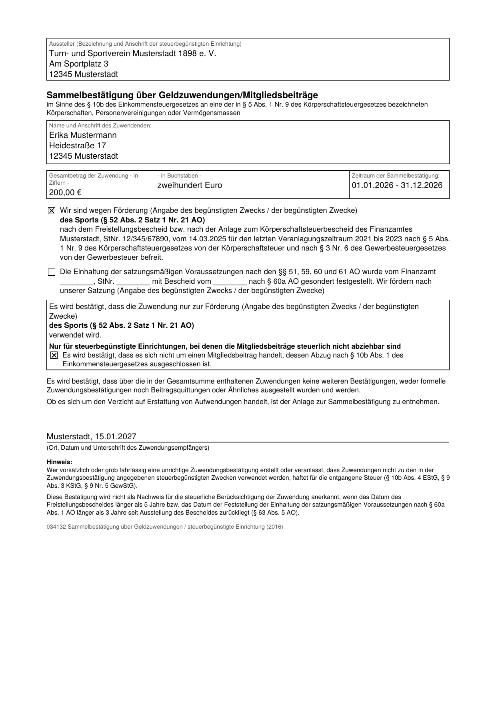

Vorschau der Bezahlversion, nicht öffentlich verlinkt. Ohne Lizenz sind hier höchstens 5 Bestätigungen möglich. Zum Ausprobieren der Freischaltung: Testschlüssel öffnen. Der Kaufen-Knopf führt in der Vorschau noch nirgendwohin.
Zuwendungsbestätigungen für Ihren Verein, direkt aus dem Kontoauszug
Laden Sie die Umsätze des Vereinskontos als CSV- oder Excel-Datei, wählen Sie die Spenden aus und ergänzen Sie die Anschriften. Der Kassenwart-Helfer erstellt daraus Einzel- und Sammelbestätigungen als druckfertige PDF-Dateien.
- Amtlicher Wortlaut. Nach den Mustern 034122 und 034132 der Finanzverwaltung (BMF-Schreiben vom 7.11.2013), Betrag in Ziffern und Worten.
- Ihre Daten bleiben bei Ihnen. Alles läuft in diesem Browser. Kontoauszüge und Anschriften werden nirgendwohin übertragen.
- Sammelbestätigung mit Anlage. Mehrere Spenden eines Jahres auf einer Bestätigung, jede Zuwendung einzeln aufgeführt.

Ihr Verein
Die Angaben finden Sie auf dem Freistellungsbescheid des Finanzamts.
Zuwendungen einlesen
Exportieren Sie im Online-Banking die Umsätze des Vereinskontos für das ganze Jahr als CSV- oder Excel-Datei, meist unter „Umsätze“ und „Exportieren“. Mehrere Dateien sind möglich, etwa für zwei Konten.
Noch keine Datei zur Hand?
Zuwendung von Hand eintragen
Für Barspenden und für den Verzicht auf Erstattung von Aufwendungen, die nicht auf dem Kontoauszug stehen.
Spender und Anschriften prüfen
Bestätigen Sie nur Spenden und, wo zulässig, Mitgliedsbeiträge. Zahlungen mit Gegenleistung wie Startgelder, Kursgebühren, Eintritt oder Sponsoring gehören nicht dazu. Kontoauszüge enthalten keine Anschriften: Tragen Sie sie hier ein oder laden Sie Ihre Mitgliederliste.
Noch keine Zuwendungen. Laden Sie in Schritt 2 einen Kontoauszug oder tragen Sie eine Zuwendung von Hand ein.
Bestätigungen erstellen
Die eine PDF-Datei ist zum Drucken gedacht, die ZIP-Datei mit einer PDF-Datei je Spender zum Versenden. Ihre Angaben sind fett gedruckt, damit Sie sie leicht prüfen können. Prüfen Sie jede Bestätigung und unterschreiben Sie sie eigenhändig. Die Gestaltung weicht von der amtlichen Vorlage ab, der Wortlaut nicht; das ist ausdrücklich erlaubt (Häufige Fragen).
Häufige Fragen
Warum sieht die Bestätigung anders aus als die amtliche Vorlage?
Weil die Finanzverwaltung das erlaubt. Nach dem BMF-Schreiben vom 7.11.2013 sind die amtlichen Muster in Wortlaut und Reihenfolge verbindlich, nicht in der Gestaltung. Rahmen, Ankreuzkästchen, Schrift und die Anordnung von Name und Anschrift darf der Verein selbst wählen, ebenso einen Briefkopf mit Logo. Die Bestätigung darf nur keine DIN-A4-Seite überschreiten; bei der Sammelbestätigung kommt die Anlage dazu.
Die Vorlage hat Lücken zum Ausfüllen. Der Kassenwart-Helfer setzt Ihre Angaben direkt in die Sätze ein, deshalb läuft der Text ohne Lücken durch.
Erkennt das Finanzamt diese Bestätigungen an?
Ja, wenn die Angaben stimmen und die Bestätigung unterschrieben ist. Wortlaut und Reihenfolge entsprechen den amtlichen Vorlagen, den Mustern 034122 (Einzelbestätigung, Stand 2013) und 034132 (Sammelbestätigung, Stand 2016). Wir gleichen sie Wort für Wort mit den Vorlagen der Finanzverwaltung ab.
Für die Richtigkeit der Angaben, also Zwecke, Bescheid, Spender und Beträge, ist der Verein als Aussteller verantwortlich. Prüfen Sie deshalb jede Bestätigung, bevor Sie sie unterschreiben.
Welche Kontoauszüge kann ich laden?
Die CSV- oder Excel-Exporte (.xlsx) der Umsätze, wie sie die meisten Banken anbieten, zum Beispiel Sparkassen, Volks- und Raiffeisenbanken, ING oder DKB. Der Kassenwart-Helfer erkennt Datum, Name, Betrag und Verwendungszweck selbst. Falls eine Spalte falsch erkannt wird, können Sie sie nach dem Laden unter dem Dateinamen selbst zuordnen.
Wann gibt es eine Einzel-, wann eine Sammelbestätigung?
Hat jemand im gewählten Jahr einmal gespendet, erstellt der Kassenwart-Helfer eine Einzelbestätigung. Bei mehreren Zuwendungen wird es eine Sammelbestätigung über das Kalenderjahr mit einer Anlage, in der jede Zuwendung mit Datum, Art und Betrag steht.
Darf ich Mitgliedsbeiträge bestätigen?
Nur wenn Ihr Verein keinen der Zwecke fördert, für die § 10b Abs. 1 Satz 8 EStG den Abzug ausschließt: Sport, kulturelle Betätigungen, die in erster Linie der Freizeitgestaltung dienen, Heimatpflege und Heimatkunde sowie die Zwecke nach § 52 Abs. 2 Satz 1 Nr. 23 AO. Bei Fördervereinen von Schulen oder Kindergärten sind Mitgliedsbeiträge dagegen meist abziehbar.
Was ist mit Sachspenden?
Für Sachzuwendungen gibt es ein eigenes amtliches Muster. Der Kassenwart-Helfer erstellt derzeit nur Bestätigungen über Geldzuwendungen und Mitgliedsbeiträge, einschließlich des Verzichts auf Erstattung von Aufwendungen.
Wo werden meine Daten gespeichert?
Nirgends, solange Sie es nicht wünschen. Kontoauszüge, Spender und Beträge werden nur im Browser verarbeitet und nicht übertragen. Wenn Sie die Häkchen bei „Vereinsangaben speichern“ oder „Anschriften merken“ setzen, legt der Browser diese Angaben auf Ihrem Gerät ab, damit Sie sie im nächsten Jahr wieder haben.
Was kostet der Kassenwart-Helfer?
Derzeit nichts. Sie brauchen auch kein Konto und keine Anmeldung.